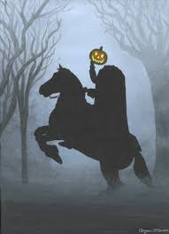

"The Legend of Sleepy Hollow" is a short story of speculative fiction by American author Washington Irving, contained in his collection of 34 essays and short stories entitled The Sketch Book of Geoffrey Crayon, Gent. Written while Irving was living abroad in Birmingham, England, "The Legend of Sleepy Hollow" was first published in 1820.
“The Legend of Sleepy Hollow” tells the story of Ichabod Crane and his hapless attempt to win the heart and hand of Katrina Van Tassel in the context of a comical ghost story. Ichabod comes to Sleepy Hollow, New York, from his home state of Connecticut, to be the schoolmaster of the village. Sleepy Hollow is a small, very quiet town said to be under some kind of enchantment. Its residents all seem to move a little slower, daydream a little more, and be more prone to believe in the supernatural. Sleepy Hollow, maybe for that reason or maybe because its residents are almost all descended from its original Dutch settlers, has more than its fair share of supernatural occurrences, or at least stories of them.
Sleepy Hollow’s most famous supernatural phenomenon is the ghost of the Headless Horseman, said to be a Hessian soldier who lost his head to a cannon ball during the Revolutionary War. The Horseman is seen most often riding by the church, where local historians say he was buried. He is believed to be always in search of his head. Ichabod is fascinated by this story, being especially interested (and prone to believe) in tales of the supernatural.
Ichabod is a strict teacher but not a cruel one, doling out his punishment of the rod only to those who can handle it. Ichabod makes almost no money, and it is customary in the village for the farmers whose sons he teaches to feed and board him in rotation. Along with this, Ichabod makes some extra money teaching singing lessons—he prides himself greatly on his magnificent voice. This arrangement keeps him employed and gives him many opportunities to hear ghost stories from the farmers’ wives and eat meals with the farmers’ daughters. He also has an insatiable hunger and a taste for the finer things.
Katrina Van Tassel, a beautiful young woman of eighteen, is one of Ichabod’s students. She is also the only child of Baltus Van Tassel, one of the more successful farmers in the area. Ichabod is quickly taken in by her flirtatious charms, but it is when he first visits her father’s abundant farm that he considers himself truly in love with her, or at least her likely inheritance.
He quickly sets out to win her hand in marriage, coming by the Van Tassel farm frequently to woo her. Ichabod is not alone in his attentions to Katrina, however. Her beauty, charm, and wealth have entranced many other men in the village, especially the formidable Brom Van Brunt, also known as Brom Bones. Brom is notorious for his boisterous personality, love of pranks, and great skill at horseback riding—all of which make him something of a village hero.
Brom has already scared off many of Katrina’s other suitors, but Ichabod is harder to shake, avoiding physical confrontation with Brom, which is Brom’s main method of intimidation. Without that option, Brom turns to his next best skill—pranks. He fills the school house with smoke, trains a dog to follow Ichabod around howling, and sets many other pranks to frustrate and humiliate Ichabod.
One day, a messenger comes to the schoolhouse to invite Ichabod to a party at the Van Tassels’. At this party, he apparently finds himself the best man in the house, and when the party is over he stays behind. For some reason, however, Katrina disappoints him. Ichabod leaves crestfallen.
He finds the path home dark and eerily quiet. He tries to keep himself from getting too scared, but soon after he has passed the possibly haunted Major Andre’s tree, he sees a large, dark figure looming nearby. It does not respond to his call, but as he passes by, it starts to move and joins him on the path riding a large, dark horse. Ichabod is greatly disturbed and tries to shake off his pursuer, but he fails. Finally, he notices that the rider has no head on his shoulders; the head seems to be sitting on the saddle in front of the man. Ichabod tries to get his decrepit horse to run home as fast as it can, but he is not a skilled rider and the horse resists.
They end up by the church, the scene of most of the stories of the Headless Horseman, and Ichabod races to the bridge where the ghost is said to disappear and not follow. Ichabod crosses the bridge and looks back, but he sees the Horseman, instead of disappearing, hurl his detached head at him. It knocks Ichabod off of his horse.
The next day, Ichabod’s horse returns to its owner’s farm, but there is no sign of Ichabod. A search party finds hoof prints and Ichabod’s hat, with a smashed pumpkin left next to it. Ichabod is never heard from again in Sleepy Hollow, although later on it seems that he is alive elsewhere and has told his story. Some of the townspeople believe that Brom Bones pulled off a great prank—which put Brom in the final position to marry Katrina—but the old women and local folklore maintain that he was taken by the Headless Horseman.
"The Legend of Sleepy Hollow": five little words, including a couple throwaways. Seems like it doesn't have much to say, but Irving sure knows how to pack a punch.
Let's start with legend. By calling the story a legend, Irving places it in history with other great legends, like Atlantis, the Fountain of Youth, or the Legends of the Fall. People have spent their whole lives searching for these places, but they never seem to find them. With his title, Irving adds Sleepy Hollow to this list—well except that, nowadays, we can find it with a quick Google Maps search.
Next up: Sleepy. The sleepiness of the title refers to both a very specific mythological place (check out "Setting" to find out where—cliffhanger!) and to the behavior of the people in the town. It's a sleepy, little town where nothing much happens and people spend their time dreaming.
Finally, there's the Hollow. Not that kind of hollow (though Ichabod's head just might be). The term Hollow is used to describe towns in the Appalachian states. That means we know right off the bat that this is an American story taking place on the East Coast.
Okay, now we know what it means, but why is this the title? Because "The Legend of Sleepy Hollow" is a story about a place. It's not about Ichabod, it's about Sleepy Hollow. And Irving wants us to know that before we even turn the first page.
